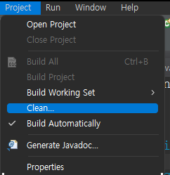

객체의 독립성
-
클래스를 통해 선언 및 생성된 객체는 추상화된 Data변수와행위(메서드)를
포함한다.
-
생성된 객체는 독립적이며,다른 객체에 대하여 비정상적인 접근을 허용하지
않는다.
-
객체는 1개 일 수 있고,배열과 리스트를 통하여 다수의 객체일 수 있다.
-
배열 요소에 "저장된" 각각의 객체는 다른 요소의 객체와 완전 독립적이다
-
리스트 요소에 "추가됨" 각각의 객체는 다른 요소의 객체와 완전
독립적이다
자바프로젝트 import 안될떄
-

방법1.프로젝트를 clean 해준다. project-clean